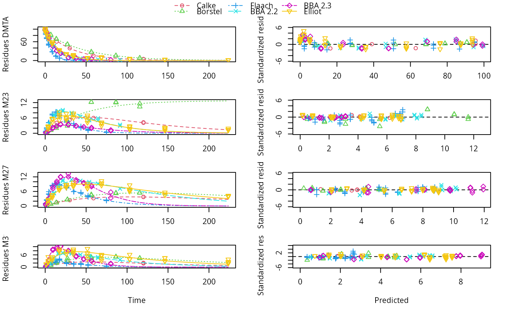

Aerobic soil degradation data on dimethenamid and dimethenamid-P from the EU assessment in 2018
Source:R/dimethenamid_2018.R
dimethenamid_2018.RdThe datasets were extracted from the active substance evaluation dossier published by EFSA. Kinetic evaluations shown for these datasets are intended to illustrate and advance kinetic modelling. The fact that these data and some results are shown here does not imply a license to use them in the context of pesticide registrations, as the use of the data may be constrained by data protection regulations.
dimethenamid_2018
Format
An mkindsg object grouping seven datasets with some meta information
Source
Rapporteur Member State Germany, Co-Rapporteur Member State Bulgaria (2018) Renewal Assessment Report Dimethenamid-P Volume 3 - B.8 Environmental fate and behaviour Rev. 2 - November 2017 https://open.efsa.europa.eu/study-inventory/EFSA-Q-2014-00716
Details
The R code used to create this data object is installed with this package in the 'dataset_generation' directory. In the code, page numbers are given for specific pieces of information in the comments.
Examples
#> <mkindsg> holding 7 mkinds objects #> Title $title: Aerobic soil degradation data on dimethenamid-P from the EU assessment in 2018 #> Occurrence of observed compounds $observed_n: #> DMTAP M23 M27 M31 DMTA #> 3 7 7 7 4 #> Time normalisation factors $f_time_norm: #> [1] 1.0000000 0.9706477 1.2284784 1.2284784 0.6233856 0.7678922 0.6733938 #> Meta information $meta: #> study usda_soil_type study_moisture_ref_type rel_moisture #> Calke Unsworth 2014 Sandy loam pF2 1.00 #> Borstel Staudenmaier 2009 Sand pF1 0.50 #> Elliot 1 Wendt 1997 Clay loam pF2.5 0.75 #> Elliot 2 Wendt 1997 Clay loam pF2.5 0.75 #> Flaach König 1996 Sandy clay loam pF1 0.40 #> BBA 2.2 König 1995 Loamy sand pF1 0.40 #> BBA 2.3 König 1995 Sandy loam pF1 0.40 #> study_ref_moisture temperature #> Calke NA 20 #> Borstel 23.00 20 #> Elliot 1 33.37 23 #> Elliot 2 33.37 23 #> Flaach NA 20 #> BBA 2.2 NA 20 #> BBA 2.3 NA 20dmta_ds <- lapply(1:7, function(i) { ds_i <- dimethenamid_2018$ds[[i]]$data ds_i[ds_i$name == "DMTAP", "name"] <- "DMTA" ds_i$time <- ds_i$time * dimethenamid_2018$f_time_norm[i] ds_i }) names(dmta_ds) <- sapply(dimethenamid_2018$ds, function(ds) ds$title) dmta_ds[["Elliot"]] <- rbind(dmta_ds[["Elliot 1"]], dmta_ds[["Elliot 2"]]) dmta_ds[["Elliot 1"]] <- NULL dmta_ds[["Elliot 2"]] <- NULL # \dontrun{ dfop_sfo3_plus <- mkinmod( DMTA = mkinsub("DFOP", c("M23", "M27", "M31")), M23 = mkinsub("SFO"), M27 = mkinsub("SFO"), M31 = mkinsub("SFO", "M27", sink = FALSE), quiet = TRUE ) f_dmta_mkin_tc <- mmkin( list("DFOP-SFO3+" = dfop_sfo3_plus), dmta_ds, quiet = TRUE, error_model = "tc") nlmixr_model(f_dmta_mkin_tc)#>#> function () #> { #> ini({ #> DMTA_0 = 98.7132391714013 #> eta.DMTA_0 ~ 2.32692496033921 #> log_k_M23 = -3.92162409637283 #> eta.log_k_M23 ~ 0.549278519419884 #> log_k_M27 = -4.33057580082049 #> eta.log_k_M27 ~ 0.855184233768426 #> log_k_M31 = -4.24415516780733 #> eta.log_k_M31 ~ 0.745746058085877 #> log_k1 = -2.23515804885306 #> eta.log_k1 ~ 0.901033446532357 #> log_k2 = -3.77581484944379 #> eta.log_k2 ~ 1.57682329638124 #> g_qlogis = 0.436302910942805 #> eta.g_qlogis ~ 3.10190528862808 #> f_DMTA_tffm0_1_qlogis = -2.0914852208395 #> eta.f_DMTA_tffm0_1_qlogis ~ 0.3 #> f_DMTA_tffm0_2_qlogis = -2.17879574608926 #> eta.f_DMTA_tffm0_2_qlogis ~ 0.3 #> f_DMTA_tffm0_3_qlogis = -2.14036526460782 #> eta.f_DMTA_tffm0_3_qlogis ~ 0.3 #> sigma_low_DMTA = 0.700117227383809 #> rsd_high_DMTA = 0.0257724286053519 #> sigma_low_M23 = 0.700117227383809 #> rsd_high_M23 = 0.0257724286053519 #> sigma_low_M27 = 0.700117227383809 #> rsd_high_M27 = 0.0257724286053519 #> sigma_low_M31 = 0.700117227383809 #> rsd_high_M31 = 0.0257724286053519 #> }) #> model({ #> DMTA_0_model = DMTA_0 + eta.DMTA_0 #> DMTA(0) = DMTA_0_model #> k_M23 = exp(log_k_M23 + eta.log_k_M23) #> k_M27 = exp(log_k_M27 + eta.log_k_M27) #> k_M31 = exp(log_k_M31 + eta.log_k_M31) #> k1 = exp(log_k1 + eta.log_k1) #> k2 = exp(log_k2 + eta.log_k2) #> g = expit(g_qlogis + eta.g_qlogis) #> f_DMTA_tffm0_1 = expit(f_DMTA_tffm0_1_qlogis + eta.f_DMTA_tffm0_1_qlogis) #> f_DMTA_tffm0_2 = expit(f_DMTA_tffm0_2_qlogis + eta.f_DMTA_tffm0_2_qlogis) #> f_DMTA_tffm0_3 = expit(f_DMTA_tffm0_3_qlogis + eta.f_DMTA_tffm0_3_qlogis) #> f_DMTA_to_M23 = f_DMTA_tffm0_1 #> f_DMTA_to_M27 = f_DMTA_tffm0_2 * (1 - f_DMTA_tffm0_1) #> f_DMTA_to_M31 = f_DMTA_tffm0_3 * (1 - f_DMTA_tffm0_2) * #> (1 - f_DMTA_tffm0_1) #> d/dt(DMTA) = -((k1 * g * exp(-k1 * time) + k2 * (1 - #> g) * exp(-k2 * time))/(g * exp(-k1 * time) + (1 - #> g) * exp(-k2 * time))) * DMTA #> d/dt(M23) = +f_DMTA_to_M23 * ((k1 * g * exp(-k1 * time) + #> k2 * (1 - g) * exp(-k2 * time))/(g * exp(-k1 * time) + #> (1 - g) * exp(-k2 * time))) * DMTA - k_M23 * M23 #> d/dt(M27) = +f_DMTA_to_M27 * ((k1 * g * exp(-k1 * time) + #> k2 * (1 - g) * exp(-k2 * time))/(g * exp(-k1 * time) + #> (1 - g) * exp(-k2 * time))) * DMTA - k_M27 * M27 + #> k_M31 * M31 #> d/dt(M31) = +f_DMTA_to_M31 * ((k1 * g * exp(-k1 * time) + #> k2 * (1 - g) * exp(-k2 * time))/(g * exp(-k1 * time) + #> (1 - g) * exp(-k2 * time))) * DMTA - k_M31 * M31 #> DMTA ~ add(sigma_low_DMTA) + prop(rsd_high_DMTA) #> M23 ~ add(sigma_low_M23) + prop(rsd_high_M23) #> M27 ~ add(sigma_low_M27) + prop(rsd_high_M27) #> M31 ~ add(sigma_low_M31) + prop(rsd_high_M31) #> }) #> } #> <environment: 0x555559e97ac0># The focei fit takes about four minutes on my system system.time( f_dmta_nlmixr_focei <- nlmixr(f_dmta_mkin_tc, est = "focei", control = nlmixr::foceiControl(print = 500)) )#>#>#>#>#>#>#>#>#>#>#>#>#>#> [====|====|====|====|====|====|====|====|====|====] 0:00:02 #>#>#> [====|====|====|====|====|====|====|====|====|====] 0:00:04 #>#>#> [====|====|====|====|====|====|====|====|====|====] 0:00:01 #>#>#> [====|====|====|====|====|====|====|====|====|====] 0:00:08 #>#>#> [====|====|====|====|====|====|====|====|====|====] 0:00:07 #>#>#> [====|====|====|====|====|====|====|====|====|====] 0:00:07 #>#>#> [====|====|====|====|====|====|====|====|====|====] 0:00:00 #>#>#> [====|====|====|====|====|====|====|====|====|====] 0:00:00 #>#>#>#>#>#>#>#>#>#>#>#>#>#>#>#> [1] "CMT"#> #>#> Key: U: Unscaled Parameters; X: Back-transformed parameters; G: Gill difference gradient approximation #> F: Forward difference gradient approximation #> C: Central difference gradient approximation #> M: Mixed forward and central difference gradient approximation #> Unscaled parameters for Omegas=chol(solve(omega)); #> Diagonals are transformed, as specified by foceiControl(diagXform=) #> |-----+---------------+-----------+-----------+-----------+-----------| #> | #| Objective Fun | DMTA_0 | log_k_M23 | log_k_M27 | log_k_M31 | #> |.....................| log_k1 | log_k2 | g_qlogis |f_DMTA_tffm0_1_qlogis | #> |.....................|f_DMTA_tffm0_2_qlogis |f_DMTA_tffm0_3_qlogis | sigma_low | rsd_high | #> |.....................| o1 | o2 | o3 | o4 | #> |.....................| o5 | o6 | o7 | o8 | #> |.....................| o9 | o10 |...........|...........| #> calculating covariance matrix #> done#>#>#> Warning: initial ETAs were nudged; (can control by foceiControl(etaNudge=., etaNudge2=))#> Warning: last objective function was not at minimum, possible problems in optimization#> Warning: S matrix non-positive definite#> Warning: using R matrix to calculate covariance#> Warning: gradient problems with initial estimate and covariance; see $scaleInfo#> user system elapsed #> 230.015 8.962 238.957#> nlmixr version used for fitting: 2.0.5 #> mkin version used for pre-fitting: 1.1.0 #> R version used for fitting: 4.1.1 #> Date of fit: Thu Sep 16 14:06:55 2021 #> Date of summary: Thu Sep 16 14:06:55 2021 #> #> Equations: #> d_DMTA/dt = - ((k1 * g * exp(-k1 * time) + k2 * (1 - g) * exp(-k2 * #> time)) / (g * exp(-k1 * time) + (1 - g) * exp(-k2 * time))) #> * DMTA #> d_M23/dt = + f_DMTA_to_M23 * ((k1 * g * exp(-k1 * time) + k2 * (1 - g) #> * exp(-k2 * time)) / (g * exp(-k1 * time) + (1 - g) * #> exp(-k2 * time))) * DMTA - k_M23 * M23 #> d_M27/dt = + f_DMTA_to_M27 * ((k1 * g * exp(-k1 * time) + k2 * (1 - g) #> * exp(-k2 * time)) / (g * exp(-k1 * time) + (1 - g) * #> exp(-k2 * time))) * DMTA - k_M27 * M27 + k_M31 * M31 #> d_M31/dt = + f_DMTA_to_M31 * ((k1 * g * exp(-k1 * time) + k2 * (1 - g) #> * exp(-k2 * time)) / (g * exp(-k1 * time) + (1 - g) * #> exp(-k2 * time))) * DMTA - k_M31 * M31 #> #> Data: #> 563 observations of 4 variable(s) grouped in 6 datasets #> #> Degradation model predictions using RxODE #> #> Fitted in 238.792 s #> #> Variance model: Two-component variance function #> #> Mean of starting values for individual parameters: #> DMTA_0 log_k_M23 log_k_M27 log_k_M31 f_DMTA_ilr_1 f_DMTA_ilr_2 #> 98.7132 -3.9216 -4.3306 -4.2442 0.1376 0.1388 #> f_DMTA_ilr_3 log_k1 log_k2 g_qlogis #> -1.7554 -2.2352 -3.7758 0.4363 #> #> Mean of starting values for error model parameters: #> sigma_low rsd_high #> 0.70012 0.02577 #> #> Fixed degradation parameter values: #> None #> #> Results: #> #> Likelihood calculated by focei #> AIC BIC logLik #> 1918 2014 -937.2 #> #> Optimised parameters: #> est. lower upper #> DMTA_0 98.7132 98.6801 98.7464 #> log_k_M23 -3.9216 -3.9235 -3.9198 #> log_k_M27 -4.3306 -4.3326 -4.3286 #> log_k_M31 -4.2442 -4.2461 -4.2422 #> log_k1 -2.2352 -2.2364 -2.2340 #> log_k2 -3.7758 -3.7776 -3.7740 #> g_qlogis 0.4363 0.4358 0.4368 #> f_DMTA_tffm0_1_qlogis -2.0915 -2.0926 -2.0903 #> f_DMTA_tffm0_2_qlogis -2.1788 -2.1800 -2.1776 #> f_DMTA_tffm0_3_qlogis -2.1404 -2.1415 -2.1392 #> #> Correlation: #> DMTA_0 l__M23 l__M27 l__M31 log_k1 log_k2 g_qlgs #> log_k_M23 0 #> log_k_M27 0 0 #> log_k_M31 0 0 0 #> log_k1 0 0 0 0 #> log_k2 0 0 0 0 0 #> g_qlogis 0 0 0 0 0 0 #> f_DMTA_tffm0_1_qlogis 0 0 0 0 0 0 0 #> f_DMTA_tffm0_2_qlogis 0 0 0 0 0 0 0 #> f_DMTA_tffm0_3_qlogis 0 0 0 0 0 0 0 #> f_DMTA_0_1 f_DMTA_0_2 #> log_k_M23 #> log_k_M27 #> log_k_M31 #> log_k1 #> log_k2 #> g_qlogis #> f_DMTA_tffm0_1_qlogis #> f_DMTA_tffm0_2_qlogis 0 #> f_DMTA_tffm0_3_qlogis 0 0 #> #> Random effects (omega): #> eta.DMTA_0 eta.log_k_M23 eta.log_k_M27 eta.log_k_M31 #> eta.DMTA_0 2.327 0.0000 0.0000 0.0000 #> eta.log_k_M23 0.000 0.5493 0.0000 0.0000 #> eta.log_k_M27 0.000 0.0000 0.8552 0.0000 #> eta.log_k_M31 0.000 0.0000 0.0000 0.7457 #> eta.log_k1 0.000 0.0000 0.0000 0.0000 #> eta.log_k2 0.000 0.0000 0.0000 0.0000 #> eta.g_qlogis 0.000 0.0000 0.0000 0.0000 #> eta.f_DMTA_tffm0_1_qlogis 0.000 0.0000 0.0000 0.0000 #> eta.f_DMTA_tffm0_2_qlogis 0.000 0.0000 0.0000 0.0000 #> eta.f_DMTA_tffm0_3_qlogis 0.000 0.0000 0.0000 0.0000 #> eta.log_k1 eta.log_k2 eta.g_qlogis #> eta.DMTA_0 0.000 0.000 0.000 #> eta.log_k_M23 0.000 0.000 0.000 #> eta.log_k_M27 0.000 0.000 0.000 #> eta.log_k_M31 0.000 0.000 0.000 #> eta.log_k1 0.901 0.000 0.000 #> eta.log_k2 0.000 1.577 0.000 #> eta.g_qlogis 0.000 0.000 3.102 #> eta.f_DMTA_tffm0_1_qlogis 0.000 0.000 0.000 #> eta.f_DMTA_tffm0_2_qlogis 0.000 0.000 0.000 #> eta.f_DMTA_tffm0_3_qlogis 0.000 0.000 0.000 #> eta.f_DMTA_tffm0_1_qlogis eta.f_DMTA_tffm0_2_qlogis #> eta.DMTA_0 0.0 0.0 #> eta.log_k_M23 0.0 0.0 #> eta.log_k_M27 0.0 0.0 #> eta.log_k_M31 0.0 0.0 #> eta.log_k1 0.0 0.0 #> eta.log_k2 0.0 0.0 #> eta.g_qlogis 0.0 0.0 #> eta.f_DMTA_tffm0_1_qlogis 0.3 0.0 #> eta.f_DMTA_tffm0_2_qlogis 0.0 0.3 #> eta.f_DMTA_tffm0_3_qlogis 0.0 0.0 #> eta.f_DMTA_tffm0_3_qlogis #> eta.DMTA_0 0.0 #> eta.log_k_M23 0.0 #> eta.log_k_M27 0.0 #> eta.log_k_M31 0.0 #> eta.log_k1 0.0 #> eta.log_k2 0.0 #> eta.g_qlogis 0.0 #> eta.f_DMTA_tffm0_1_qlogis 0.0 #> eta.f_DMTA_tffm0_2_qlogis 0.0 #> eta.f_DMTA_tffm0_3_qlogis 0.3 #> #> Variance model: #> sigma_low rsd_high #> 0.70012 0.02577 #> #> Backtransformed parameters: #> est. lower upper #> DMTA_0 98.71324 98.68012 98.74636 #> k_M23 0.01981 0.01977 0.01985 #> k_M27 0.01316 0.01313 0.01319 #> k_M31 0.01435 0.01432 0.01438 #> f_DMTA_to_M23 0.10993 NA NA #> f_DMTA_to_M27 0.09049 NA NA #> f_DMTA_to_M31 0.08414 NA NA #> k1 0.10698 0.10685 0.10710 #> k2 0.02292 0.02288 0.02296 #> g 0.60738 0.60725 0.60751 #> #> Resulting formation fractions: #> ff #> DMTA_M23 0.10993 #> DMTA_M27 0.09049 #> DMTA_M31 0.08414 #> DMTA_sink 0.71543 #> #> Estimated disappearance times: #> DT50 DT90 DT50back DT50_k1 DT50_k2 #> DMTA 10.72 60.1 18.09 6.48 30.24 #> M23 34.99 116.2 NA NA NA #> M27 52.67 175.0 NA NA NA #> M31 48.31 160.5 NA NA NA# Using saemix takes about 18 minutes system.time( f_dmta_saemix <- saem(f_dmta_mkin_tc, test_log_parms = TRUE) )#> Running main SAEM algorithm #> [1] "Thu Sep 16 14:06:56 2021" #> .... #> Minimisation finished #> [1] "Thu Sep 16 14:25:28 2021"#> user system elapsed #> 1176.278 0.021 1176.388# nlmixr with est = "saem" is pretty fast with default iteration numbers, most # of the time (about 2.5 minutes) is spent for calculating the log likelihood at the end # The likelihood calculated for the nlmixr fit is much lower than that found by saemix # Also, the trace plot and the plot of the individual predictions is not # convincing for the parent. It seems we are fitting an overparameterised # model, so the result we get strongly depends on starting parameters and control settings. system.time( f_dmta_nlmixr_saem <- nlmixr(f_dmta_mkin_tc, est = "saem", control = nlmixr::saemControl(print = 500, logLik = TRUE, nmc = 9)) )#>#>#>#>#>#>#> 1: 98.3400 -3.5096 -3.3392 -3.7596 -2.2055 -2.7755 1.0281 -2.7872 -2.7223 -2.8341 2.6422 0.7027 0.8124 0.7085 0.8560 1.4980 3.2777 0.3063 0.2850 0.2850 4.1120 0.3716 4.4582 0.3994 4.4820 0.4025 3.7803 0.5780 #> 500: 97.8212 -4.4030 -4.0872 -4.1289 -2.8278 -4.3505 2.6614 -2.1252 -2.1308 -2.0749 2.9463 1.2933 0.2802 0.3467 0.4814 0.7877 3.0743 0.1508 0.1523 0.3155 0.9557 0.0333 0.4787 0.1073 0.6826 0.0707 0.7849 0.0356#>#>#>#>#>#>#>#>#>#>#>#>#>#> [1] "CMT"#>#>#> user system elapsed #> 800.784 3.715 149.687traceplot(f_dmta_nlmixr_saem$nm)#> Error in traceplot(f_dmta_nlmixr_saem$nm): could not find function "traceplot"#> nlmixr version used for fitting: 2.0.5 #> mkin version used for pre-fitting: 1.1.0 #> R version used for fitting: 4.1.1 #> Date of fit: Thu Sep 16 14:29:02 2021 #> Date of summary: Thu Sep 16 14:29:02 2021 #> #> Equations: #> d_DMTA/dt = - ((k1 * g * exp(-k1 * time) + k2 * (1 - g) * exp(-k2 * #> time)) / (g * exp(-k1 * time) + (1 - g) * exp(-k2 * time))) #> * DMTA #> d_M23/dt = + f_DMTA_to_M23 * ((k1 * g * exp(-k1 * time) + k2 * (1 - g) #> * exp(-k2 * time)) / (g * exp(-k1 * time) + (1 - g) * #> exp(-k2 * time))) * DMTA - k_M23 * M23 #> d_M27/dt = + f_DMTA_to_M27 * ((k1 * g * exp(-k1 * time) + k2 * (1 - g) #> * exp(-k2 * time)) / (g * exp(-k1 * time) + (1 - g) * #> exp(-k2 * time))) * DMTA - k_M27 * M27 + k_M31 * M31 #> d_M31/dt = + f_DMTA_to_M31 * ((k1 * g * exp(-k1 * time) + k2 * (1 - g) #> * exp(-k2 * time)) / (g * exp(-k1 * time) + (1 - g) * #> exp(-k2 * time))) * DMTA - k_M31 * M31 #> #> Data: #> 563 observations of 4 variable(s) grouped in 6 datasets #> #> Degradation model predictions using RxODE #> #> Fitted in 149.421 s #> #> Variance model: Two-component variance function #> #> Mean of starting values for individual parameters: #> DMTA_0 log_k_M23 log_k_M27 log_k_M31 f_DMTA_ilr_1 f_DMTA_ilr_2 #> 98.7132 -3.9216 -4.3306 -4.2442 0.1376 0.1388 #> f_DMTA_ilr_3 log_k1 log_k2 g_qlogis #> -1.7554 -2.2352 -3.7758 0.4363 #> #> Mean of starting values for error model parameters: #> sigma_low_DMTA rsd_high_DMTA sigma_low_M23 rsd_high_M23 sigma_low_M27 #> 0.70012 0.02577 0.70012 0.02577 0.70012 #> rsd_high_M27 sigma_low_M31 rsd_high_M31 #> 0.02577 0.70012 0.02577 #> #> Fixed degradation parameter values: #> None #> #> Results: #> #> Likelihood calculated by focei #> AIC BIC logLik #> 1953 2074 -948.3 #> #> Optimised parameters: #> est. lower upper #> DMTA_0 97.821 95.862 99.780 #> log_k_M23 -4.403 -5.376 -3.430 #> log_k_M27 -4.087 -4.545 -3.629 #> log_k_M31 -4.129 -4.639 -3.618 #> log_k1 -2.828 -3.389 -2.266 #> log_k2 -4.351 -5.472 -3.229 #> g_qlogis 2.661 0.824 4.499 #> f_DMTA_tffm0_1_qlogis -2.125 -2.449 -1.801 #> f_DMTA_tffm0_2_qlogis -2.131 -2.468 -1.794 #> f_DMTA_tffm0_3_qlogis -2.075 -2.540 -1.610 #> #> Correlation: #> DMTA_0 l__M23 l__M27 l__M31 log_k1 log_k2 g_qlgs #> log_k_M23 -0.019 #> log_k_M27 -0.028 0.004 #> log_k_M31 -0.019 0.003 0.075 #> log_k1 0.038 -0.004 -0.006 -0.003 #> log_k2 0.046 0.011 0.008 0.009 0.068 #> g_qlogis -0.067 0.004 0.006 0.001 -0.076 -0.409 #> f_DMTA_tffm0_1_qlogis -0.062 0.055 0.006 0.004 -0.008 -0.004 0.012 #> f_DMTA_tffm0_2_qlogis -0.062 0.010 0.058 -0.034 -0.008 -0.007 0.014 #> f_DMTA_tffm0_3_qlogis -0.052 0.009 0.056 0.071 -0.006 -0.001 0.008 #> f_DMTA_0_1 f_DMTA_0_2 #> log_k_M23 #> log_k_M27 #> log_k_M31 #> log_k1 #> log_k2 #> g_qlogis #> f_DMTA_tffm0_1_qlogis #> f_DMTA_tffm0_2_qlogis 0.017 #> f_DMTA_tffm0_3_qlogis 0.014 -0.005 #> #> Random effects (omega): #> eta.DMTA_0 eta.log_k_M23 eta.log_k_M27 eta.log_k_M31 #> eta.DMTA_0 2.946 0.000 0.0000 0.0000 #> eta.log_k_M23 0.000 1.293 0.0000 0.0000 #> eta.log_k_M27 0.000 0.000 0.2802 0.0000 #> eta.log_k_M31 0.000 0.000 0.0000 0.3467 #> eta.log_k1 0.000 0.000 0.0000 0.0000 #> eta.log_k2 0.000 0.000 0.0000 0.0000 #> eta.g_qlogis 0.000 0.000 0.0000 0.0000 #> eta.f_DMTA_tffm0_1_qlogis 0.000 0.000 0.0000 0.0000 #> eta.f_DMTA_tffm0_2_qlogis 0.000 0.000 0.0000 0.0000 #> eta.f_DMTA_tffm0_3_qlogis 0.000 0.000 0.0000 0.0000 #> eta.log_k1 eta.log_k2 eta.g_qlogis #> eta.DMTA_0 0.0000 0.0000 0.000 #> eta.log_k_M23 0.0000 0.0000 0.000 #> eta.log_k_M27 0.0000 0.0000 0.000 #> eta.log_k_M31 0.0000 0.0000 0.000 #> eta.log_k1 0.4814 0.0000 0.000 #> eta.log_k2 0.0000 0.7877 0.000 #> eta.g_qlogis 0.0000 0.0000 3.074 #> eta.f_DMTA_tffm0_1_qlogis 0.0000 0.0000 0.000 #> eta.f_DMTA_tffm0_2_qlogis 0.0000 0.0000 0.000 #> eta.f_DMTA_tffm0_3_qlogis 0.0000 0.0000 0.000 #> eta.f_DMTA_tffm0_1_qlogis eta.f_DMTA_tffm0_2_qlogis #> eta.DMTA_0 0.0000 0.0000 #> eta.log_k_M23 0.0000 0.0000 #> eta.log_k_M27 0.0000 0.0000 #> eta.log_k_M31 0.0000 0.0000 #> eta.log_k1 0.0000 0.0000 #> eta.log_k2 0.0000 0.0000 #> eta.g_qlogis 0.0000 0.0000 #> eta.f_DMTA_tffm0_1_qlogis 0.1508 0.0000 #> eta.f_DMTA_tffm0_2_qlogis 0.0000 0.1523 #> eta.f_DMTA_tffm0_3_qlogis 0.0000 0.0000 #> eta.f_DMTA_tffm0_3_qlogis #> eta.DMTA_0 0.0000 #> eta.log_k_M23 0.0000 #> eta.log_k_M27 0.0000 #> eta.log_k_M31 0.0000 #> eta.log_k1 0.0000 #> eta.log_k2 0.0000 #> eta.g_qlogis 0.0000 #> eta.f_DMTA_tffm0_1_qlogis 0.0000 #> eta.f_DMTA_tffm0_2_qlogis 0.0000 #> eta.f_DMTA_tffm0_3_qlogis 0.3155 #> #> Variance model: #> sigma_low_DMTA rsd_high_DMTA sigma_low_M23 rsd_high_M23 sigma_low_M27 #> 0.95572 0.03325 0.47871 0.10733 0.68264 #> rsd_high_M27 sigma_low_M31 rsd_high_M31 #> 0.07072 0.78486 0.03557 #> #> Backtransformed parameters: #> est. lower upper #> DMTA_0 97.82122 95.862233 99.78020 #> k_M23 0.01224 0.004625 0.03239 #> k_M27 0.01679 0.010615 0.02654 #> k_M31 0.01610 0.009664 0.02683 #> f_DMTA_to_M23 0.10668 NA NA #> f_DMTA_to_M27 0.09481 NA NA #> f_DMTA_to_M31 0.08908 NA NA #> k1 0.05914 0.033731 0.10370 #> k2 0.01290 0.004204 0.03958 #> g 0.93471 0.695081 0.98900 #> #> Resulting formation fractions: #> ff #> DMTA_M23 0.10668 #> DMTA_M27 0.09481 #> DMTA_M31 0.08908 #> DMTA_sink 0.70943 #> #> Estimated disappearance times: #> DT50 DT90 DT50back DT50_k1 DT50_k2 #> DMTA 12.57 45.43 13.67 11.72 53.73 #> M23 56.63 188.11 NA NA NA #> M27 41.29 137.18 NA NA NA #> M31 43.05 143.01 NA NA NA# }